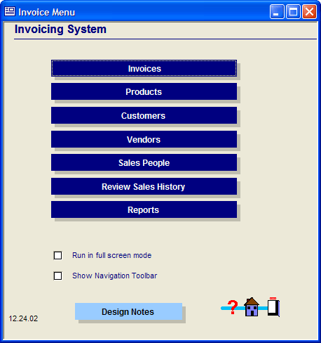

Designing an Application for Alpha Anywhere Runtime
When you design an application that you intend to run with the Alpha Anywhere Runtime, you should make sure that you keep the following in mind:
Be sure to specify a "start up" form. The "start up" form is loaded automatically whenever Alpha Anywhere loads a database file (i.e., an .adb file). The start up form should be the main menu of your application. For example, the AlphaSports application that ships with Alpha Anywhere has a form called "Main Menu" that loads automatically whenever the alphasports.adb file is opened.

AlphaSports Start Up Form
The buttons on the start up form should open the various forms and reports in your application. To specify a start up form when you are designing your application, select File > Database Properties, select the form from the list of available forms, and then check the Run on load check box.
Design a custom menu and toolbar for the start up form. You probably do not want your application to display the default Alpha Anywhere menus and toolbars when your application runs. To specify a custom menu and toolbar (or no menu or toolbar at all), edit the start up form, select Form > Properties, display the Menus/Toolbars tab and enter the name of the custom menu and toolbar.
Insure that when the user closes the start up form you also close the Alpha Anywhere Runtime. If you allow the user to close your start up form, without also closing the Alpha Anywhere Runtime itself, then the user will be left staring at the Alpha Anywhere Control Panel. This is probably undesirable. Your should insure that when the user closes the start up form, that the Alpha Anywhere Runtime is also closed. You can do this by using the A5.CLOSE() method.
For example, assume that you put a button on the start up form to close the application. You could attach this code to the button's OnPush event:
|
response = ui_msg_box("", "Are you sure you want to close the application?", UI_YES_NO) if response= UI_YES_SELECTED then a5.close() else choice="NO" end if |
You might also want to put a "Close" or "Exit"
command on the custom menu that you design for the start up form. You
would attach the same code above to this menu option. The user can also
close the start up form by clicking on the  button in the
start up form's title bar. You should therefore attach the following script
to the form's CanExit
event:
button in the
start up form's title bar. You should therefore attach the following script
to the form's CanExit
event:
|
response = ui_msg_box("", "Are you sure you want to close the application?", UI_YES_NO) if response= UI_YES_SELECTED then a5.close() else cancel() end if |
Put buttons, or menu items, to perform system maintenance options on your start up form and menu. System maintenance functions, such as rebuilding corrupt indexes, packing tables, refreshing network optimized databases etc. should all be made available to users of your applications. You should have a button on your start up form, or a command on the start up form's menu that allows the user to perform certain system maintenance tasks.
While in normal operation, indexes should never become corrupt, if an application is improperly terminated, or a power glitch occurs, indexes can become corrupt. Therefore, your application should include a button to update indexes.
 Note : Creating a script
to update indexes in all tables is easy. There is an option in Action Scripting to create a script that updates indexes and packs tables for multiple tables.
Note : Creating a script
to update indexes in all tables is easy. There is an option in Action Scripting to create a script that updates indexes and packs tables for multiple tables.
If your application is designed to run on a network, and you are using Alpha Anywhere's Network Optimization feature, you might need to include a command that allows the Alpha Anywhere Runtime user to refresh the application. This is necessary if the master copy of the application is updated. The Refresh Shadow command must be run from each workstation to ensure that the latest copy of the master application is copied to the local workstation. You can create a command button or menu choice on the start up form with the following code to refresh the application:
|
'Update local copy of Network Optimized database '------------------------------------------------------------ refresh_shadow() 'Tell user that Alpha Anywhere must be restarted '------------------------------------------------------------ ui_msg_box("Warning", "The application must now be restarted") a5.close() |
Create a global script called Autoexec. You may want to create a global script (click on the Code tab of the Control Panel and click the New button) called Autoexec to perform "start up" tasks for your application. The autoexec script is automatically executed when Alpha Anywhere starts up. For example, you might want to open several forms when the application is started, or prompt for a user name and password, or set the value in some variable etc.
Required files. The actual complement of files required by your application depends on the features that you are using. At an absolute minimum, the following files are always required.
- .AEX files
- .DLL files with names starting with "A5"
- SH31W32.DLL
Reporting. While the Alpha Anywhere Runtime does not allow the user to create their own reports, form letters, or other layouts, you can still allow your users a limited degree of flexibility in designing layouts of their own. For example, assume that you want to allow a user to compose the body of a form letter you have included in your application. You do this by designing a table with a memo field. The user would type the body of the form letter into the memo field, and you would include a form letter in the application that prints the contents of the memo field. The user is not directly editing the form letter, but is still able to customize its contents.
Similarly, say you wanted to allow the user to select which columns were to be in a report. You could design a "template" report with several calculated fields in the report Detail section. These calculated fields might be of the form: eval(vColumn1), eval(vColumn2), eval(vColumn3) etc. vColumn1, vColumn2 and vColumn3 would be defined as global variables. In your application, you would design a form that allowed the user to set the value in these variables. For example, if the user set vColumn1 to "lastname", then when the template report was run, the first column would print out last names.
Create Demo Versions of your Application. You may want to create demo versions of your application that your customers can use in some limited fashion until they have purchased the full application. For example, you want to supply the whole application to them, but restrict them to entering a certain number of records. To do this, you would attach a script to each table's CanSaveRecord event, which is defined in Field Rules. The following script shows how to restrict the user to just 50 records in a table:
|
dim tbl as P dim records as N tbl = table.current() records = tbl.records_get() If (records > 50) then Cancel() End If |
See Also
Alpha Anywhere Runtime License